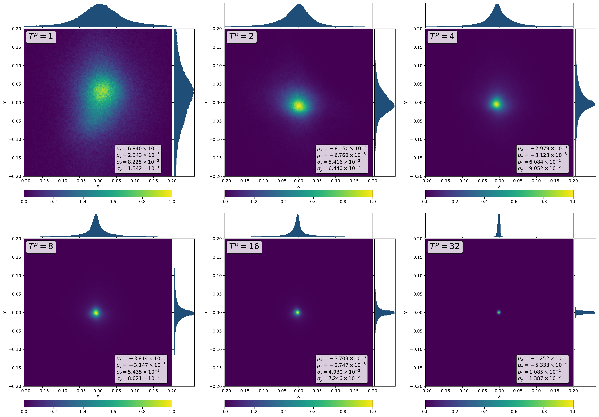
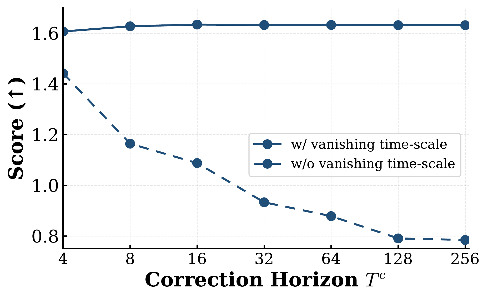

Trajectory Generation
Locomotion (Hopper)
Maze2D Navigation
Kuka Manipulation
ICLR 2026
Locomotion (Hopper)
Maze2D Navigation
Kuka Manipulation
Generative planners based on flow matching (FM) produce high-quality paths in a single or a few ODE steps, but their sampling dynamics offer no formal safety guarantees and can yield incomplete paths near constraints. We present SafeFlowMatcher, a planning framework that couples FM with control barrier functions (CBFs) to achieve both real-time efficiency and certified safety.
SafeFlowMatcher uses a two-phase prediction–correction (PC) integrator: (i) a prediction phase integrates the learned FM once (or a few steps) to obtain a candidate path without intervention; (ii) a correction phase refines this path with a vanishing time-scaled vector field and a CBF-based quadratic program that minimally perturbs the vector field. We prove a barrier certificate for the resulting flow system, establishing forward invariance of a robust safe set and finite-time convergence to the safe set.
By enforcing safety only on the executed path—rather than all intermediate latent paths—SafeFlowMatcher avoids distributional drift and mitigates local trap problems. Moreover, SafeFlowMatcher attains faster, smoother, and safer paths than diffusion- and FM-based baselines on maze navigation, locomotion, and robot manipulation tasks. Extensive ablations corroborate the contributions of the PC integrator and the barrier certificate.

Comparison of path generation processes. (Top) RES-SafeDiffuser initializes samples all over the maze and converges to a path with local traps. (Bottom) SafeFlowMatcher (ours) initializes from near the target path after the prediction phase, and converges to a higher-quality path with no local traps.
Phase 1 — Prediction: Sample noise $\boldsymbol{\tau}_0^p \sim \mathcal{N}(0, I)$ and integrate the learned flow matching ODE in a single (or a few) Euler step(s) to obtain a candidate path $\boldsymbol{\tau}_1^p$, without any safety intervention. This preserves the native FM dynamics and avoids distributional drift.
Phase 2 — Correction: Starting from $\boldsymbol{\tau}_0^c = \boldsymbol{\tau}_1^p$, refine the path using vanishing time-scaled flow dynamics (VTFD) $\dot{\boldsymbol{\tau}}_t^c = \alpha(1-t) v_t(\boldsymbol{\tau}_t^c; \theta)$ combined with a CBF-based quadratic program that minimally perturbs the velocity field to guarantee forward invariance and finite-time convergence to the safe set.
| Method | BS1 (≥0) | BS2 (≥0) | Score ↑ | Time (ms) | Trap Rate ↓ |
|---|---|---|---|---|---|
| Diffuser | -0.825 | -0.784 | 1.572±0.288 | 3.70 | 0% |
| RES-SafeDiffuser | 0.010 | 0.010 | 1.442±0.451 | 4.72 | 72% |
| TVS-SafeDiffuser | -0.003 | -0.003 | 1.506±0.405 | 4.78 | 69% |
| TVS-SafeDDIM ($\eta$=1.0) | -0.026 | -0.026 | 1.549±0.304 | 4.74 | 65% |
| RES-SafeFM | 0.010 | 0.010 | 1.401±0.429 | 4.74 | 12% |
| SafeFlowMatcher (Ours) | 0.010 | 0.010 | 1.632±0.003 | 4.71 | 0% |
SafeFlowMatcher achieves the highest score with zero trap rate and guaranteed safety (BS ≥ 0), evaluated over 100 independent trials.
| Category | Environment | Method | Score ↑ | BS (≥0) |
|---|---|---|---|---|
| Locomotion | Walker2D | SafeDiffuser | 0.283±0.135 | Yes |
| SafeFM | 0.264±0.127 | Yes | ||
| SafeFlowMatcher (Ours) | 0.331±0.021 | Yes | ||
| Hopper | SafeDiffuser | 0.435±0.068 | Yes | |
| SafeFM | 0.675±0.312 | Yes | ||
| SafeFlowMatcher (Ours) | 0.917±0.026 | Yes | ||
| Robot Manipulation | Block Stacking | SafeDiffuser | 0.72±0.055 | Yes |
| SafeFM | 0.73±0.056 | Yes | ||
| SafeFlowMatcher (Ours) | 0.76±0.053 | Yes |
Performance on high-dimensional robotic tasks. SafeFlowMatcher maintains its advantages in both locomotion and robot manipulation settings.
Interactive CBF-QP visualization. Drag the velocity endpoint (hollow circle) to see how the CBF-QP corrects unsafe velocities. When $\tilde{v}_t^k$ points into the unsafe region, the QP computes a minimum-norm correction $\Delta \mathbf{u}_t^k$.
The core challenge is: how can we certify safety in continuous-time flow matching dynamics? SafeFlowMatcher formalizes safety through finite-time flow invariance using continuous-time control barrier functions (CBFs).
Notation. Let $\boldsymbol{\tau}_t^c \in \mathcal{D}^{H+1} \subseteq \mathbb{R}^{d \times (H+1)}$ be the path at time $t$ during the correction phase, where $H$ is the planning horizon and each waypoint $\boldsymbol{\tau}_t^{c,k} \in \mathcal{D} \subseteq \mathbb{R}^d$ for $k \in \mathcal{H} = \{0, \ldots, H\}$. Define a $C^1$ barrier function $b : \mathcal{D} \to \mathbb{R}$ and the robust safe set $\mathcal{C}_\delta = \{ \boldsymbol{\tau}^{c,k} \in \mathcal{D} \mid b(\boldsymbol{\tau}^{c,k}) \geq \delta \}$ for robustness margin $\delta > 0$.
During the correction phase, the flow dynamics are augmented with a minimal safety perturbation $\Delta \mathbf{u}_t$: $$\frac{d\boldsymbol{\tau}_t^{c,k}}{dt} = \tilde{v}_t^k(\boldsymbol{\tau}_t^c;\theta) + \Delta \mathbf{u}_t^k \triangleq \mathbf{u}_t^k,$$ where $\tilde{v}_t^k$ is the vanishing time-scaled flow (defined in Phase 2 below). The perturbation $\Delta \mathbf{u}_t^k$ is chosen to be the minimum-norm correction that satisfies a barrier certificate, via a per-waypoint quadratic program (CBF-QP): $$\mathbf{u}_t^{k*}, r_t^{k*} = \arg\min_{\mathbf{u}_t^k, r_t^k} \| \mathbf{u}_t^k - \tilde{v}_t^k \|^2 + {r_t^k}^2 \quad \text{s.t.} \quad \nabla b(\boldsymbol{\tau}_t^{c,k})^\top \mathbf{u}_t^k + \epsilon \cdot \text{sgn}(b - \delta) |b - \delta|^\rho + w_t^k r_t^k \geq 0.$$
Theorem 1 (Forward Invariance). If the barrier certificate above is satisfied for all $k \in \mathcal{H}$ and $t \in [0,1]$ with $0 < \rho < 1$, $\epsilon > 0$, then the flow system achieves finite-time flow invariance on $\mathcal{C}_\delta$—i.e., there exists $t_f \in [0,1]$ such that $b(\boldsymbol{\tau}_t^{c,k}) \geq \delta$ for all $k$ and $t \geq t_f$.
Proposition 1 (Finite Convergence Time). For any initial waypoint $\boldsymbol{\tau}_{t_w}^{c,k} \in \mathcal{D} \setminus \mathcal{C}_\delta$, convergence to $\mathcal{C}_\delta$ is guaranteed within $T \leq t_w + \frac{(\delta - b(\boldsymbol{\tau}_{t_w}^{c,k}))^{1-\rho}}{\epsilon(1-\rho)}$, providing an explicit bound on the correction time needed for safety.
The prediction phase generates a candidate path from pure noise without any safety intervention, preserving the native flow matching dynamics. Starting from $\boldsymbol{\tau}_0^p \sim \mathcal{N}(0, I)$, we run $T^p$ Euler steps to obtain: $$\boldsymbol{\tau}_1^p = \Psi^{(T^p)}_{0 \to 1}(\boldsymbol{\tau}_0^p) = \boldsymbol{\tau}_1^\star + \varepsilon,$$ where $\boldsymbol{\tau}_1^\star$ is the exact FM solution and $\varepsilon$ is the Euler discretization error. The key insight is that a single step ($T^p = 1$) already places $\boldsymbol{\tau}_1^p$ sufficiently close to $\boldsymbol{\tau}_1^\star$ to serve as a good initialization for the correction phase.
Theoretical backing (Lemma 1). Under the assumption that the prediction error $\varepsilon$ follows a symmetric, zero-mean distribution with locally strongly convex negative log-density (i.e., $-\log p_\varepsilon$ is $C^2$ with positive-definite Hessian $A \succ 0$ near $\varepsilon = 0$), the posterior expectation contracts toward the target: $\mathbb{E}[\boldsymbol{\tau}_1 \mid \boldsymbol{\tau}_t^c] = \boldsymbol{\tau}_1^\star + O(1-t)$. This guarantees that the correction phase can effectively refine the predicted path, as the posterior concentrates in an $O(1-t)$ neighborhood of the true target as $t \to 1$.
We ablate the number of function evaluations allocated to prediction ($T^p$) vs. correction ($T^c$). A single-step prediction ($T^p{=}1$) already suffices to initialize the corrector effectively and matches the performance of substantially larger $T^p$ (e.g., $16$). We therefore adopt $T^p{=}1$ as the default, balancing performance and compute.
| $T^p$ | 1 | 2 | 4 | 8 | 16 |
|---|---|---|---|---|---|
| Score ↑ | 1.632±0.008 | 1.520±0.340 | 1.468±0.434 | 1.362±0.480 | 1.632±0.003 |

Predicted path quality vs $T^p$. A single-step prediction already provides a good initialization for the corrector.
We verify the symmetric zero-mean assumption on $\varepsilon$ by evaluating 1,000 predicted paths (384,000 total waypoints) for each $T^p \in \{1, 2, 4, 8, 16, 32\}$ in Maze2D. The error distribution is compared against a high-accuracy reference solution computed via Dormand–Prince 5(4) with 256 steps. Across all $T^p$ values, the distribution of $\varepsilon$ remains centered at zero and exhibits clear symmetry, directly supporting the Gaussian-like assumption of Lemma 1.

Empirical distribution of the prediction error $\varepsilon$ over $T^p$. Across all values, $\varepsilon$ remains centered at zero with clear symmetry, validating the Gaussian-like assumption of Lemma 1.
The correction phase starts from $\boldsymbol{\tau}_0^c = \boldsymbol{\tau}_1^p$ (the predicted path) and refines it by (i) reducing the discretization error $\varepsilon$ and (ii) enforcing safety constraints. To achieve error reduction, we introduce vanishing time-scaled flow dynamics (VTFD): $$\frac{d\boldsymbol{\tau}_t^c}{dt} = \alpha(1-t) \, v_t(\boldsymbol{\tau}_t^c; \theta) \triangleq \tilde{v}_t(\boldsymbol{\tau}_t^c; \theta),$$ where the factor $(1-t)$ gradually suppresses the vector field as $t \to 1$ with scaling constant $\alpha > 0$. This produces a contraction effect: the path is driven toward the target in early correction steps, while the dynamics become increasingly stable near $t = 1$, preventing drift.
Lemma 2 (VTFD Error Reduction). Under the assumptions of Lemma 1, let $\mathbf{e}_t = \boldsymbol{\tau}_t^c - \boldsymbol{\tau}_1^\star$. If the dynamics follow VTFD, then as $t \to 1$: $$\mathbf{e}_t = O((1-t)^2) + (\varepsilon + O(1)) e^{-\alpha t}.$$ The error decays exponentially with rate $\alpha$, while the polynomial term $O((1-t)^2)$ vanishes as $t \to 1$. This formally guarantees that VTFD reduces the prediction error of $\boldsymbol{\tau}_1^c$.
Safety is then enforced by augmenting the VTFD dynamics with the CBF-QP perturbation $\Delta \mathbf{u}_t$ (as described above in the Safety Guarantee section), which minimally perturbs the vanishing time-scaled velocity field to maintain forward invariance of the robust safe set $\mathcal{C}_\delta$.
We sweep the scaling constant $\alpha$ in VTFD to empirically validate its role. Moderate scaling ($\alpha{=}2$) yields the best trade-off: larger $\alpha$ accelerates early convergence but can over-amplify the vector field and reduce stability, while smaller $\alpha$ cannot effectively reduce error.
| $\alpha$ | 1.0 | 1.5 | 2.0 | 2.5 | 3.0 |
|---|---|---|---|---|---|
| Score ↑ | 1.623±0.005 | 1.629±0.004 | 1.632±0.008 | 1.618±0.033 | 1.572±0.058 |

Generated paths under different scaling constant $\alpha$. As $\alpha$ increases, the path becomes smoother but can be distorted beyond a critical value ($\alpha \approx 2$).

Score with and without vanishing time-scale. As sampling steps increase, the score decreases in the absence of VTFD.

Path quality with (a) and without (b) vanishing time-scale. Without VTFD, the path exhibits a sharp drift near $t{=}1$.
@inproceedings{
yang2026safeflowmatcher,
title={SafeFlowMatcher: Safe and Fast Planning using Flow Matching with Control Barrier Functions},
author={Jeongyong Yang and Seunghwan Jang and SooJean Han},
booktitle={The Fourteenth International Conference on Learning Representations},
year={2026},
url={https://openreview.net/forum?id=refcXHU1Nh}
}The diffusion model implementation is based on Diffuser by Michael Janner. The safe diffusion implementation is based on SafeDiffuser by Wei Xiao.